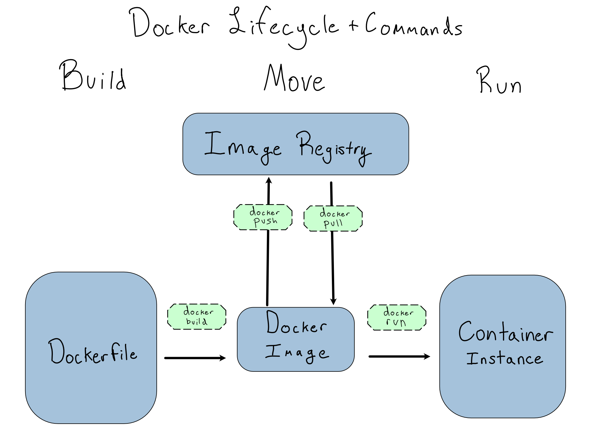
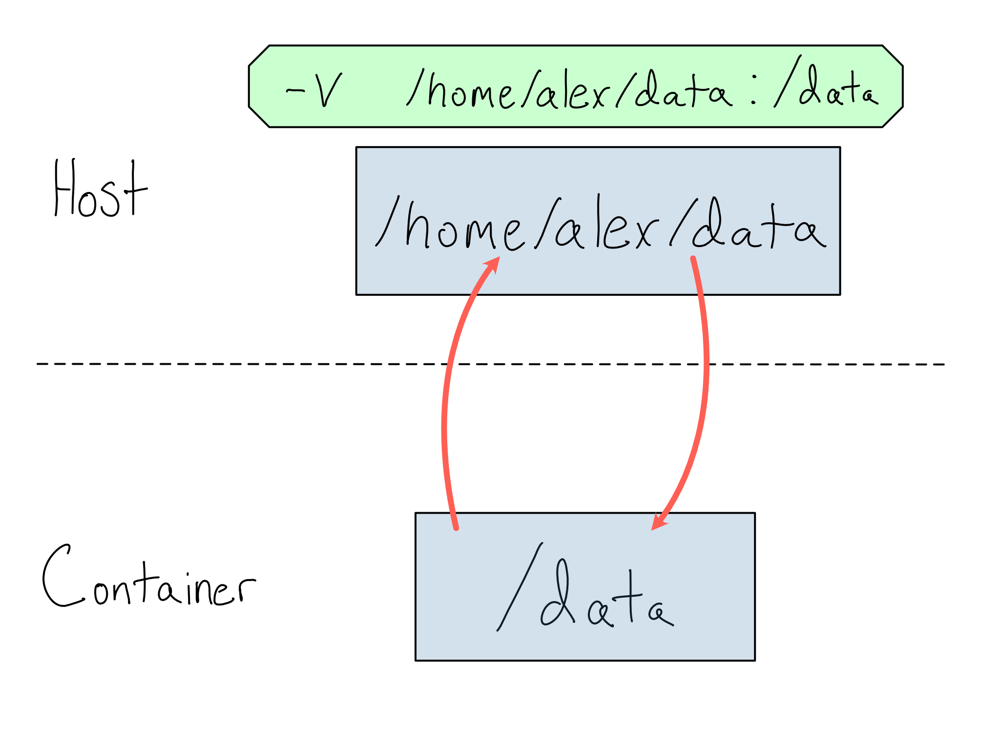

6 Demystifying Docker
Docker is an open-source tool for building, sharing, and running software. Docker is currently the dominant way software developers capture a development environment and is an increasingly popular tool to take code to production.
Docker has become so popular because it makes code portable. In most cases, the only system prerequisite to run almost any Docker container is Docker itself.1 Everything else comes in the container.
Unlike environment as code tools that are specific to one language, like {renv} or {venv}, Docker captures the entire reproducibility stack down to the operating system. The appeal is evident if you’ve ever struggled with someone else running code you’ve written.
Docker has so many strengths that it’s easy to believe it will solve all reproducibility problems. It’s worth keeping a little perspective.
While Docker usually ensures that the code inside will run, it doesn’t fully solve reproducibility or IT/Admin concerns. Some highly regulated contexts consider a container insufficiently rigorous for reproducibility purposes.
Running a container also makes it easy to stand things up, but integrations to other services, like data sources and authentication, still must be configured externally.
Lastly, running a container adds one more service between you and the code you’re trying to run. Trying to get docker to work without a good mental model of how the services interact can be very frustrating.
This chapter focuses solely on the local use of Docker for building and running containers. For more on running containers in a production context, including using Kubernetes, see Chapter 17.
In this chapter, you’ll learn about the basic terminology and concepts for running other people’s Docker containers and creating your own. In the lab at the end of the chapter, we’ll practice hosting an API inside a container.
Container lifecycle
Docker is primarily concerned with the creation, movement, and running of containers. A container is a software entity that packages code and its dependencies down to the operating system. Containers are one way to have completely different environments coexisting side-by-side on one physical machine.
Containers aren’t the only way to run multiple virtual environments on one host. They’re just the most talked about right now.
And Docker Containers aren’t the only type of container. You may run across other kinds, like Apptainer (formerly Singularity), often used in high performance computing (HPC) contexts.
A Docker Image is an immutable snapshot of a container. When you want to run a container, you pull the image and run it as an instance or container that you’ll interact with.
Confusingly, the term container is used both to refer to a running instance (“Here’s my running container”) as well as which image (“I used the newest Ubuntu container”).
I prefer the term instance for the running container to eliminate this confusion.
Images are usually stored in registries, which are similar to Git repositories. The most common registry for public containers is Docker Hub, which allows public and private hosting of images in free and paid tiers. Docker Hub includes official images for operating systems and programming languages, as well as many community-contributed containers. Some organizations run private registries, usually using registry as a service offerings from cloud providers.2
Images are built from Dockerfiles – the code that defines the image. Dockerfiles are usually stored in a Git repository. Building and pushing images in a CI/CD pipeline is common so changes to the Dockerfile are immediately reflected in the registry.
You can control Docker Containers from the Docker Desktop app. If you’re using Docker on a server, you’ll mostly interact via the command line interface (CLI). All Docker CLI commands are formatted as docker <command>.
The graphic below shows the different states for a container and the CLI commands to move from one to another.

I’ve included docker pull on the graphic for completeness, but you’ll rarely run it. docker run auto-pulls the container(s) it needs.
Instances run on an underlying machine called a host. A primary feature – also a liability – of using containers is that they are ephemeral. Unless configured otherwise, anything inside an instance when it shuts down vanishes without a trace.
See Appendix D for a cheat sheet listing common Docker commands.
Image Names
You must know which image you’re referencing to build, push, pull, or run it. Every image has a name that consists of an id and a tag.
If you’re using Docker Hub, container IDs take the form <user>/<container name>, so I might have the container alexkgold/my-container. This should look familiar to GitHub users.
Other registries may enforce similar conventions for IDs, or they may allow IDs in any format they want.
Tags specify versions and variants of containers and come after the id and :. For example, the official Python Docker image has tags for each version of Python like python:3, variants for different operating systems, and a slim version that saves space by excluding recommended packages.
Some tags, usually used for versions, are immutable. For example, the rocker/r-ver container is built on Ubuntu and has a version of R built in. There’s a rocker/r-ver:4.3.1, which is a container with R 4.3.1.
Other tags are relative to the point in time. If you don’t see a tag on a container name, it’s using the default latest. Other common relative tags refer to the current development state of the software inside, like devel, release, or stable.
Running containers
The docker run command runs container images as an instance. You can run docker run <image name> to get a running container. However, most things you want to do with your instance require several command line flags.
The -name <name> flag names an instance. If you don’t provide a name, each instance gets a random alphanumeric ID on start. Names are useful because they persist across individual instances of a container, so they can be easily remembered or used in code.
The -rm flag automatically removes the container after it’s done. If you don’t use the -rm flag, the container will stick around until you clean it up manually with docker rm. The -rm flag can be useful when iterating quickly – especially because you can’t re-use names until you remove the container.
The -d flag will run your container in detached mode. This is useful when you want your container to run in the background and not block your terminal session. It’s useful when running containers in production, but you probably don’t want to use it when trying things out and want to see logs streaming out as the container runs.
Getting Information in and out
When a container runs, it is isolated from the host. This is a great feature. It means programs running inside the container can address the container’s filesystem and networking without worrying about the host outside. But, it also means that using resources on the host requires explicit declarations as part of the docker run command.
To get data in or out of a container, you must mount a shared volume (directory) between the container and host with the -v flag. You specify a host directory and a container directory separated by :. Anything in the volume will be available to both the host and the container at the file paths specified.
For example, maybe you’ve got a container that runs a job against data it expects in the /data directory. On your host machine, this data lives at /home/alex/data. You could make this happen with:
Terminal
docker run -v /home/alex/data:/dataHere’s a diagram of how this works.

Similarly, if you have a service running in a container on a particular port, you’ll need to map the container port to a host port with the -p flag.
Other Runtime Commands
If you want to see your containers, docker ps lists them. This is especially useful to get instance IDs if you didn’t bother with names.
To stop a running container, docker stop does so nicely and docker kill terminates a container immediately.
You can view the logs from a container with docker logs.
Lastly, you can execute a command inside a running container with docker exec. This is most commonly used to access the command line inside the container as if SSH-ing to a server with docker exec -it <container> /bin/bash.
While it’s normal to SSH into a server to poke around, it’s somewhat of an anti-pattern to exec in to fix problems. Generally, you should prefer to review logs and adjust Dockerfiles and run commands.
Building images from Dockerfiles
A Dockerfile is a set of instructions to build a Docker image. If you know how to accomplish something from the command line, you shouldn’t have too much trouble building a Dockerfile to do the same.
One thing to consider when creating Dockerfiles is that the resulting image is immutable, meaning that anything you build into the image is forever frozen in time. You’ll want to set up the versions of R and Python and install system requirements in your Dockerfile. Depending on the purpose of your container, you may want to copy in code, data, and/or R and Python packages, or you may want to mount those in from a volume at runtime.
There are many Dockerfile commands. You can review them all in the Dockerfile documentation, but here are the handful that are enough to build most images:
FROM– Specify the base image, usually the first line of the Dockerfile.RUN– Run any command as if you were sitting at the command line inside the container.COPY– Copy a file from the host filesystem into the container.CMD– Specify what command to run on the container’s shell when it runs, usually the last line of the Dockerfile.3
Every Dockerfile command defines a new layer. A great feature of Docker is that it only rebuilds the layers it needs to when you make changes. For example, take the following Dockerfile:
Dockerfile
FROM ubuntu:latest
COPY my-data.csv /data/data.csv
RUN ["head", "/data/data.csv"] # <1>- This line runs the
headcommand against the/data/data.csvfile when the container runs. Suppose you wanted to change it totail.
Rebuilding this container would be nearly instantaneous because the container would only start rebuilding after the COPY command.
Once you’ve created your Dockerfile, you build it into an image using docker build -t <image name> <build directory>. If you don’t provide a tag, the default tag is latest.
You can then push the image to DockerHub or another registry using docker push <image name>.
Comprehension questions
- Draw a mental map of the relationship between the following: Dockerfile, Docker Image, Docker Registry, Docker Container.
- When would you want to use each of the following flags for
docker run? When wouldn’t you?-p,--name,-d,--rm,-v
- What are the most important Dockerfile commands?
Lab: Putting an API in a container
It is common to host an API by putting it into a container. In this lab, we will put the Penguin Model Prediction API from Chapter 2 into a container.
If you’ve never used Docker before, start by installing Docker Desktop on your computer.
Feel free to write your own Dockerfile to put the API in a container. The Dockerfile will need to copy the API code and a requirements file into the container, install the requirements, run the API when the container starts, and expose an appropriate port.
Since the model will be updated more frequently than the container, I’d recommend putting the model outside the API and loading it when the container starts. If you’re using Vetiver, that will look something like:
b = pins.board_folder('/data/model', allow_pickle_read=True)
v = VetiverModel.from_pin(b, 'penguin_model',
version = '20230422T102952Z-cb1f9')If you want to make it easy, the {vetiver} package, which you’ll remember auto-generated the API for us, can also auto-generate a Dockerfile.
You can see a working Dockerfile in the GitHub repo for this book (akgold/do4ds) in the _labs/lab6 directory.
Now build the container using docker build -t penguin-model ..
You can run the container using:
Terminal
docker run --rm -d \
-p 8080:8080 \
--name penguin-model \
1 -v /data/model:/data/model \
penguin-model- 1
-
This line is necessary because the model lives at
/data/modelon our host machine. But the API inside the container is looking for/data/modelinside the container. We need to make sure that the directory exists and has the model in it.
Lab Extensions
Right now, logs from the API stay inside the container instance. But that means that the logs go away when the container does. That’s bad if the container dies because something goes wrong.
How might you ensure the container’s logs get written somewhere more permanent?
This was truer before the introduction of M-series chips for Macs. Chip architecture differences fall below the level that a container captures, and many popular containers wouldn’t run on new Macs. These issues are getting better over time and will probably fully disappear relatively soon.↩︎
The big three container registries are AWS Elastic Container Registry (ECR), Azure Container Registry, and Google Container Registry.↩︎
You may also see
ENTRYPOINT, which sets the commandCMDruns against. Usually the default/bin/sh -cto runCMDin the shell will be the right choice.↩︎